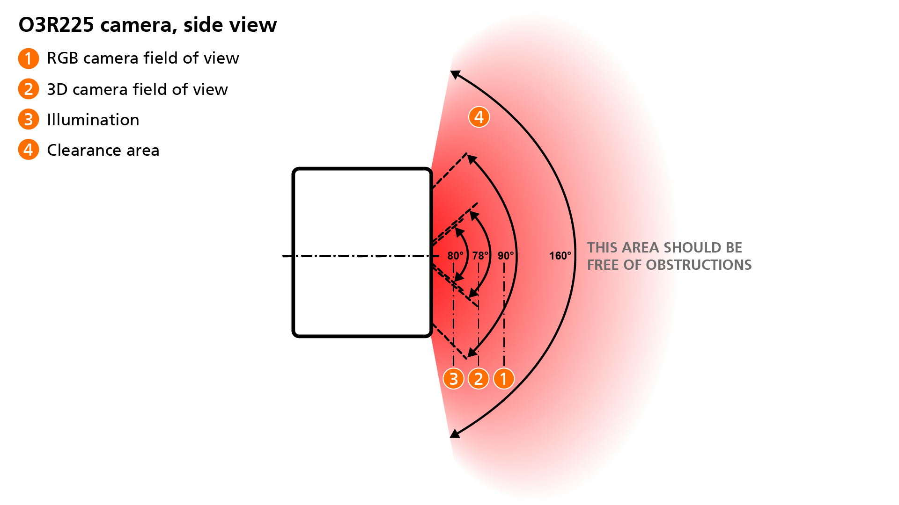
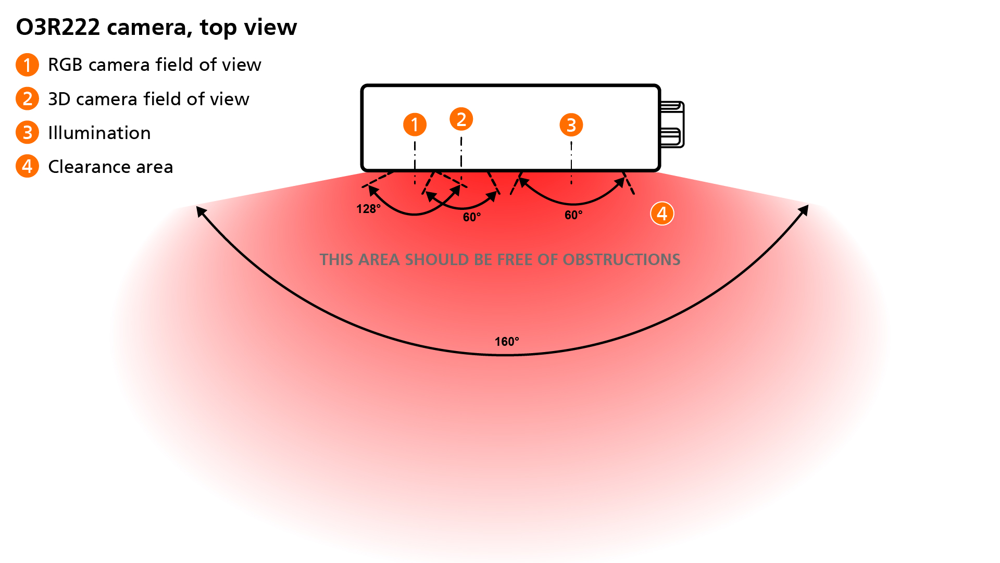
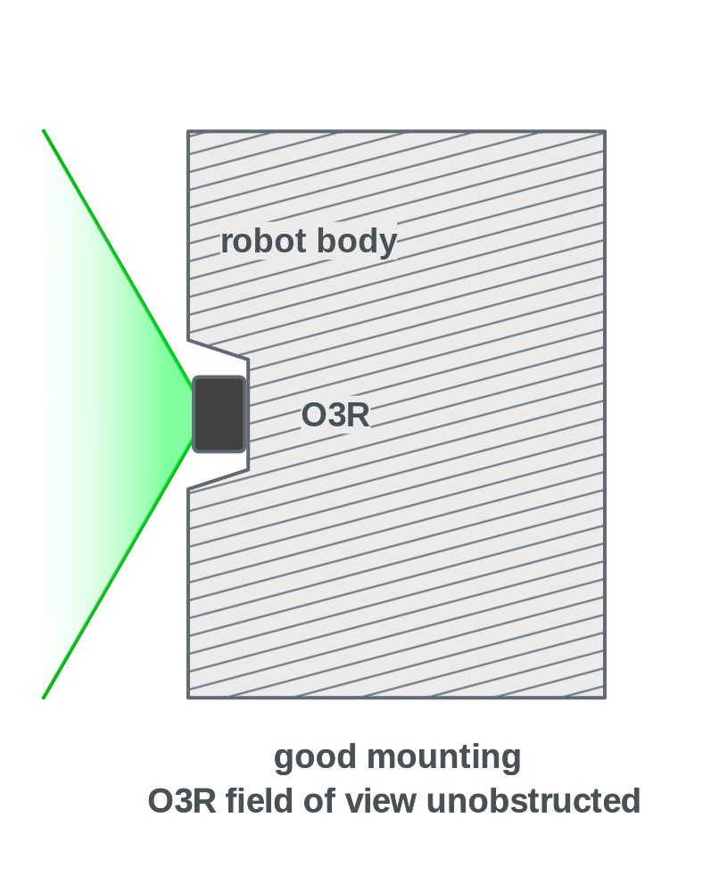
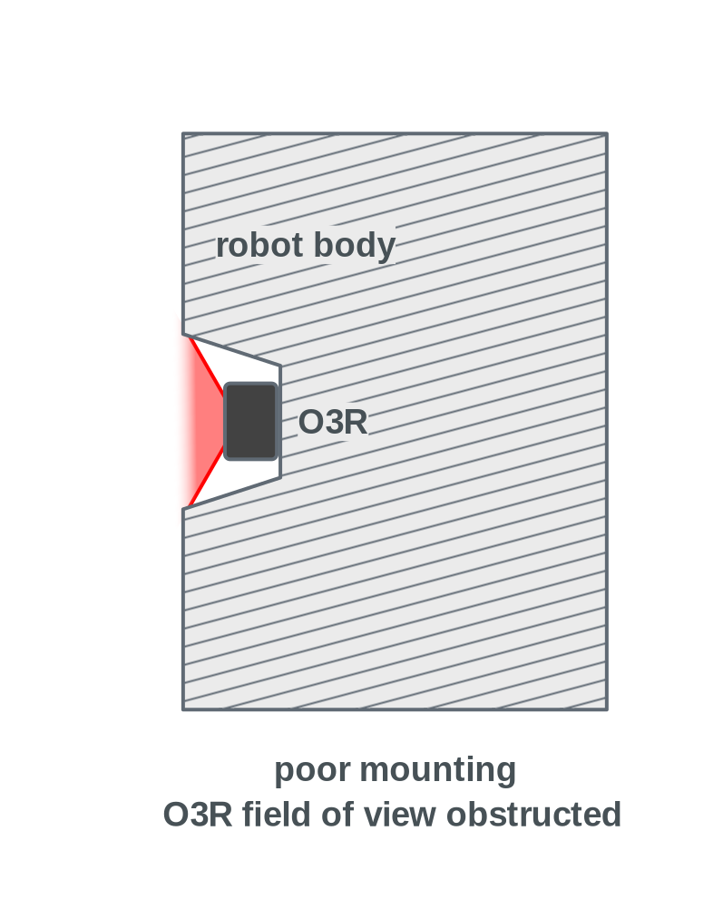
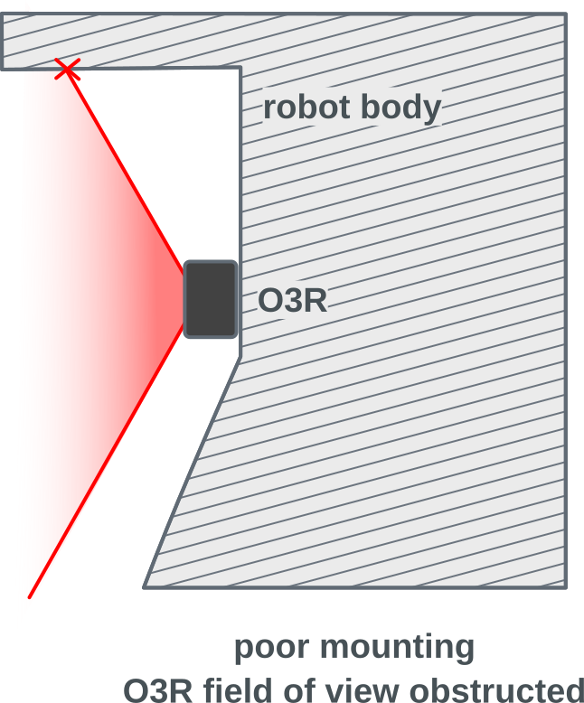
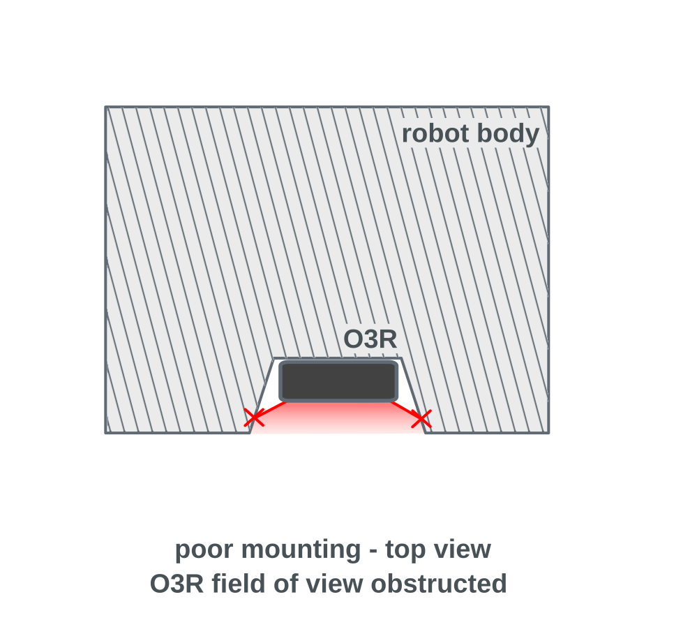

Clearance area requirements
The O3Rxxx cameras use active illumination. The field of view of the illumination module is wider than the field of view of the optics module. Any object obstructing the field of view of the illumination module or the lens, especially in the close range, can cause disruptions of the signal and generate artifacts that are difficult to filter out.
To ensure that no disruption is caused by objects in the close range, for example the vehicle’s chassis itself, it is required to maintain a clearance area around the camera free of all obstruction.
O3R225
For the O3R225, the clearance area is defined as shown in the diagram below:

The clearance area is 160 degrees along both the horizontal and the vertical axis. For more information about how the clearance area is defined, reach out to the support team at support.efector.object-ident@ifm.com.
The clearance area shall be kept free of any permanent obstructions, like the vehicle’s chassis or other overhanging parts. It is especially important to respect these requirements for the first 50 cm in front of the camera.
Temporary occlusions, like loads carried by the vehicle, can be acceptable depending on the setup but might impact the detection performance. For dealing with such occlusions in ODS, refer to the overhanging loads documentation.
Note
You may have noticed that the illumination area extends past the nominal field of view of the illumination module. This is because of the diffuse quality of light: light reaches a wider angle than the specified field of view, with its intensity decreasing as the angle increases. This means that objects in the area to the edges of the illumination field of view can still impact the measurements. The defined clearance area takes this into account.
O3R222
For the O3R222, the clearance area is the same as the one for the O3R225, even though the field of view is narrower:

The clearance area is 160 degrees along both the horizontal and the vertical axis. For more information about how the clearance area is defined, reach out to the support team at support.efector.object-ident@ifm.com.
The clearance area shall be kept free of any permanent obstructions, like the vehicle’s chassis or other overhanging parts. It is especially important to respect these requirements for the first 50 cm in front of the camera.
Temporary occlusions, like loads carried by the vehicle, can be acceptable depending on the setup but might impact the detection performance. For dealing with such occlusions in ODS, refer to the overhanging loads documentation.
Note
You may have noticed that the illumination area extends past the nominal field of view of the illumination module. This is because of the diffuse quality of light: light reaches a wider angle than the specified field of view, with its intensity decreasing as the angle increases. This means that objects in the area to the edges of the illumination field of view can still impact the measurements. The defined clearance area takes this into account.
Examples
Considering the clearance area requirements listed above, below are two examples of mounting positions:
Correct mounting |
Incorrect mounting |
|---|---|
With this mounting position, the clearance area is respected |
With these mounting positions, the clearance area is not respected. |
 |
 |
 |
|
 |
Warning
Pay particular attention to parts of the vehicle that could obstruct the clearance area in corners, or further away than the robot shell itself.